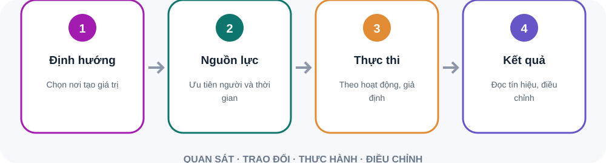

Nhận diện vấn đề hoặc cơ hội có ý nghĩa.
Điều chỉnh công việc nhóm theo ưu tiên chung.
Đưa thông tin vận hành và khách hàng vào trao đổi chiến lược.
Nêu ít kết quả quan trọng để tập trung.
Xác định nhóm, quyết định hoặc nguồn lực cần phối hợp.
Theo dõi doanh thu, chi phí và kết quả trong một giai đoạn.
Xem tài sản, nghĩa vụ và phần vốn tại một thời điểm.
Theo dõi tiền vào, tiền ra và khả năng đáp ứng nghĩa vụ.
Nêu kết quả cần hỗ trợ.
Ghi rõ điều kiện về khối lượng, nguồn lực và thời điểm.
Xác định người quyết định, người thực hiện và người nhận kết quả.
Tìm nhu cầu, mối quan tâm và điều kiện chấp nhận.
Mời góp ý trước khi phương án đã cố định.
Mô tả vấn đề, đối tượng chịu ảnh hưởng và căn cứ hiện có.
Nêu lợi ích, nguồn lực, rủi ro và giả định.
Đặt phạm vi, người theo dõi và thời điểm quyết định tiếp.
Quản lý hoạt động kết nối lựa chọn với nguồn lực, cách thực hiện và tín hiệu thực tế—rồi điều chỉnh khi giả định không còn đúng.

Hỏi hành động nào tạo ra chỉ số và tác dụng phụ.
So kỳ vọng với dữ liệu mới trước khi đầu tư tiếp.
Nguồn: Bloom & Van Reenen · Journal of Economic Perspectives
Sơ đồ tóm tắt bốn bước. Quản lý hoạt động kết nối lựa chọn với nguồn lực, cách thực hiện và tín hiệu thực tế—rồi điều chỉnh khi giả định không còn đúng. Đừng dừng ở chỉ tiêu: Hỏi hành động nào tạo ra chỉ số và tác dụng phụ. Kiểm tra giả định: So kỳ vọng với dữ liệu mới trước khi đầu tư tiếp.
Vấn đề khách hàng hay vận hành nào được giải?
Điều gì phải đúng để phương án hiệu quả?
Bước thử nhỏ nào giúp giảm bất định?
Tách dữ kiện khỏi giả định: nhu cầu, chi phí, chất lượng và phương án thay thế. Nếu còn bất định, thử giới hạn với tín hiệu thành công, điểm dừng và người chịu trách nhiệm.
Phòng thực hành: phản biện đề xuất kinh doanh. Tình huống: Nhóm đề xuất mở thêm một ca làm vì dự đoán nhu cầu tăng. Dự báo chưa có dữ liệu xác nhận và nguồn lực hiện đã căng.. Hãy tự nêu dữ kiện, rủi ro và hành động đầu tiên trước khi mở gợi ý xử lý.
Chọn hướng đi và những việc sẽ không ưu tiên.
Đọc kết quả, tình hình tài sản và dòng tiền.
Kết nối nhu cầu, lợi ích, nguồn lực và rủi ro.